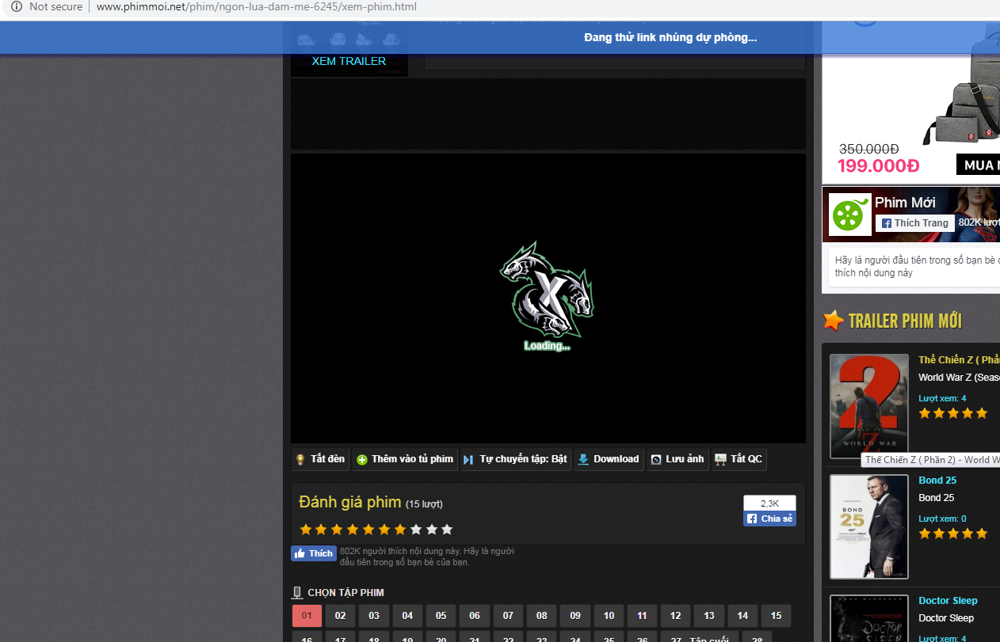
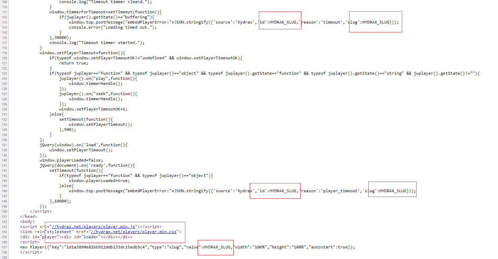
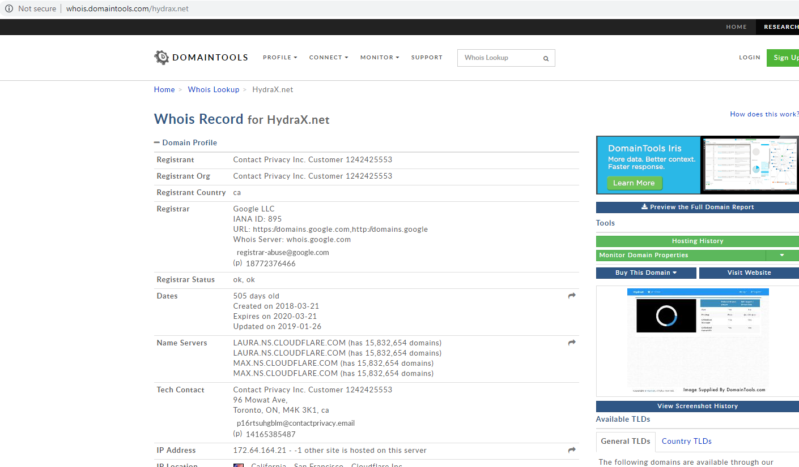
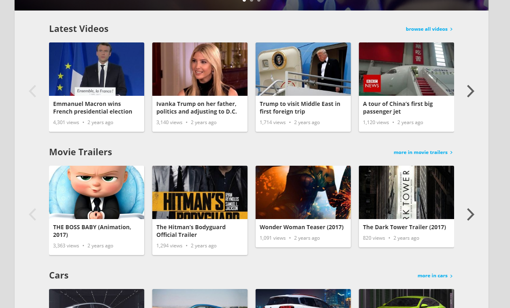
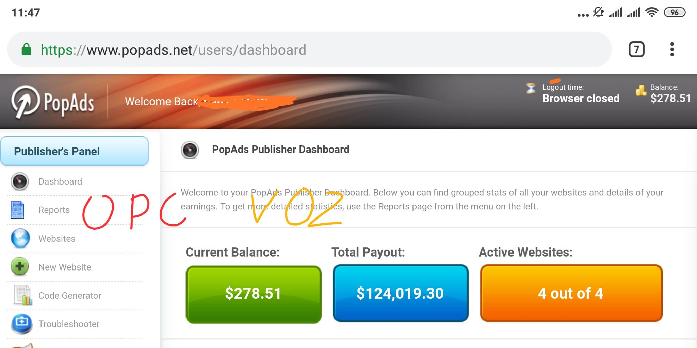

Thành công đôi khi nhờ may mắn và duyên phận
Lời dẫn: Đây là một bài viết huyền thoại trên diễn đàn VOZ, kể về hành trình của một người tay ngang (opc_762) từ thất nghiệp, mày mò làm website phim, gặp may mắn với Hydrax và đạt được thành công rực rỡ. Bài viết mang đậm tính trải nghiệm thực tế, có chút may mắn nhưng cũng đầy nỗ lực.
Lưu ý: Nội dung bên dưới là nguyên văn của tác giả, mình chỉ reup lại để lưu trữ.
Anh em lưu ý vài điều sau.
- Tất cả các website, url trong bài đều không thuộc quyền sở hữu của mình.
- Mình không tuyển đồng nghiệp, không đa cấp, không buôn bán gì cả.
- Anh em cứ xác định từ đầu là mình xạo l** và chỉ xem như đọc giải trí để đỡ phải nghĩ
nhiều.
- Thi thoảng sẽ có ít hình. Một vài giải thích chi tiết cho anh em nào có hứng thú tìm hiểu
thêm.
Q: Sao bài cũ xóa rồi?
A: Squall ngứa mắt xóa :embarrassed:
Chương 1: Kẻ thất nghiệp lười biếng.
Sau khi cãi nhau với chủ, tôi nghỉ việc, cái công việc lương tháng 6tr mà tôi đã làm hơn 4
năm qua. :stick:
Lý do tôi nghỉ việc, là thời gian làm việc và sự hao mòn sức khỏe, nó cao hơn so với đồng
lương tôi nhận được.
Lạm phát gia tăng, đồng tiền rớt giá, lượng công việc tăng, lương thì không tăng. Tôi yêu
cầu tăng lương, chủ không đồng ý. Thế là tôi nghỉ. Tôi thất nghiệp ! :surrender:
Ba tháng trời nằm nhà, sống bằng tiền tiết kiệm. Nằm lướt các group tìm việc trên Facebook cả
ngày. Nhưng không tìm được công việc ưng ý.
Lúc tìm được việc thì phỏng vấn thất bại, hoặc đã đủ người. Vâng tất nhiên, mình nhận ra
công việc béo bở, thì người khác cũng nhận ra.
Ối người trình độ cao và nhanh chân hơn, không tới lượt mình cũng bình thường. :adore:
Tôi suy nghĩ về việc tự mình làm chủ. Nhưng mà, dựa vào đâu để khởi nghiệp?
Một người bạn quen trên Facebook khuyên tôi nên thử tìm hiểu MMO, cậu ấy kiếm được một khoản
kha khá từ bitcoin.
Nhưng tôi nghĩ mình không hợp với trò đó, vì nó có tính chất may rủi. Chưa kể, bản thân tôi
cũng không có tiền để chơi bitcoin. :sweat:
Tôi bắt đầu suy nghĩ, về những ưu và nhược điểm cũng như khả năng của mình.
Tuổi: 26
Học vấn: 12/12
Thể chất: Trung bình.
Ngoại hình: Trung bình.
Trí tuệ: Trung bình.
Giao tiếp: Yếu.
Chuyên cần: Kém.
Vâng, một thằng thất bại, không bằng cấp, không ngoại hình, không có tài ăn nói, không thông
minh và đặc điểm chết người nhất là bản tính tôi quá lười.
Với tập hợp những yếu tố trên, cả tôi cũng không nghĩ mình có khả năng kiếm được công việc
nào lương cao. Nhất là bản tính tôi lười từ bé, lớn lên cố sửa đổi mà không được.
:pudency:
Năng nổ được dăm ba bữa, lại đâu vào đấy.
Chắc đọc tới đây là đã hiểu, vì sao tôi có thể thất nghiệp tới 3 tháng. Vâng, chính xác là vậy, do tôi lười, cả việc lướt Facebook tìm việc tôi cũng lười. :stick:
Chương 2: Tìm kiếm lối thoát.
Tôi cố vắt óc ra suy nghĩ. Nếu không đi làm thuê. Thì làm sao, tìm được việc gì đó đáp ứng
mấy nhu cầu như thế này.
Mà lại phải phù hợp với khả năng và tính cách của mình.
- Kiếm ra tiền (tất nhiên). :beauty:
- Ít phải vận động tay chân.
- Ít phải vận động đầu óc.
- Có giá trị tích lũy lâu dài.
Cái quan trọng nhất là dòng cuối, "Có giá trị tích lũy lâu dài". Đừng nói về vụ làm việc tích
lũy kinh nghiệm sau này làm chủ.
Thời đại thay đổi liên tục, kinh nghiệm cũng sẽ lỗi thời. Mà chả nhẽ tôi có kinh nghiệm chạy
xe thì tôi nên làm shiper? :nosebleed:
Với cả, trên cái đất nước này, bao nhiêu người còng lưng ra làm công nhân lâu năm. Rồi được
mấy ai ra làm chủ???
Tích lũy lâu dài, theo ý tôi, không phải tích lũy về mặt kinh nghiệm. Mà là tích lũy về mặt
tài sản, về mặt dòng tiền. :embarrassed:
Đại khái là, khi tôi không đi làm, nghỉ một hai ngày, thì tiền vẫn vào túi tôi. Chứ không
phải làm ngày nào ăn ngày đó, nghỉ làm là đói.
Nghĩ đi nghĩ lại, tôi chỉ nghĩ ra được kiểu đầu tư bất động sản là đáp ứng được các nhu cầu
trên. :adore:
Ví dụ tôi có 10 căn nhà cho thuê chả hạn. Vậy tương đương với mỗi ngày kiếm được 1-2 triệu
chả phải làm gì.
Rồi về sau, khi tích lũy đầu đủ, tôi có thể mua thêm căn nhà thứ 11, 12, 13 và cứ thế dòng
tiền càng xoay càng lớn. :beauty:
Nhưng để kiếm tiền từ cái này, trước tiên, tôi phải có thật nhiều tiền để mua nhà đã.
:pudency:
Thế là bế tắc !
Nghĩ mãi không ra, tôi đâm ra chán nản. Thấy cuộc sống nhạt nhẽo.
Những ngày sau đó, ngoài việc ăn mỳ với trứng ngày 3 bữa để tiết kiệm. Việc tôi làm chủ yếu
là cày phim.
Chương 3: Ý tưởng từ một bài báo.
Rồi một ngày, bỗng nhiên tôi đọc được một bài báo trên Zing.
"Làm web phim lậu kiếm tiền tỷ, vốn 0 đồng tại VN"
Link bài báo

Khi đọc bài báo này, tôi cảm thấy máu nóng sôi trào lên. Đây chẳng phải là thứ mình đang tìm kiếm sao? :surrender:
Tôi không cần kiếm tiền tỷ như trong báo viết. Tôi chỉ cần kiếm tháng 5% của con số đó là mãn nguyện rồi. :beauty:
Hiện tại, phim tôi đang xem là một phim từ năm 2012, nhưng lúc này là 2018 rồi. Tôi vẫn xem
phim của 2012.
Vậy chẳng phải, việc tôi xem phim cũ từ 6 năm trước, là minh chứng cho việc giá trị lao động
của admin web phim từ 6 năm trước vẫn đang tạo ra tiền sao? :shame:
Nghĩ là làm, tôi bắt đầu tìm hiểu về cách tự làm web phim.
Chương 4: Tìm hiểu và học hỏi.
Tôi join vào các group về lập trình trên Facebook.
Sau hai ngày ngồi đọc các post và comment trên những group đó. Tôi nhận ra một điều. Đó
là.
TÔI CHẢ HIỂU CON MẸ GÌ CẢ ! ! ! :surrender:
Không biết phải hỏi. Một post ngây ngô được đăng lên.
"Mình muốn làm website, phải bắt đầu từ đâu?" :adore:
Rất nhiều comment. Tôi được biết thêm về các khái niệm như domain (tên miền) và
hosting/server (chỗ chứa web), cùng với các ngôn ngữ lập trình.
Đa phần các comment đều trả lời là phải bắt đầu học lập trình.
Lập trình web thì có Javascript, HTML và PHP. Người mới thì nên bắt đầu từ lập trình HTML.
Tôi search trên google về các bài hướng dẫn tự học HTML, ban đầu chỉ là copy những ví dụ trên mạng, past vào notepad rồi save lại để xem kết quả.
Dần dần tôi biết cách kết hợp nó.
Sau một tuần mò mẫm, tôi đã dựng được website đầu tiên của mình bằng HTML. :sexy:
Trang web HTML đầu tiên tôi làm, nó giống vầy nè. Code cũ tôi xóa rồi, đại khái nó như này.
Tôi chụp hình lại website trên máy mình, post bài lên group để khoe.
"Sau một tuần tìm hiểu HTML, mình đã làm được website đầu tiên"
Bài post này của tôi, nhận được một rổ gạch đá. Về nội dung tổng quát thì có thể phân ra làm
mấy luồng ý kiến như sau.
- Website như con c*c cũng khoe. (chiếm đa số)
- Cái này mà gọi là website à? (khá nhiều)
- Học HTML 1 tuần mà chỉ làm được như vầy thì dẹp đi. (cũng nhiều)
- Em tao lớp 5 nó tự học có 2 ngày đã làm đẹp hơn vầy rồi. :shame:
Trong đó có một post khiến tôi khá quan tâm.
Đại ý là:
Nếu bạn học HTML một tuần mà chỉ làm được như vầy, thì nên bỏ suy nghĩ tự viết website đi.
Thay vào đó bạn nên đi thuê người viết, hoặc dùng các open source có sẵn trên mạng.
Thậm chí, bạn dùng blogspot với một cái template free nó còn đẹp hơn !
Sau một hồi ngẫm nghĩ, tôi chuyển hướng sang tìm hiểu về blogspot. :nosebleed:
Chương 5: Chuyển hướng nghiên cứu.
blogspot.com là một nền tảng blog của Google, miễn phí và khá dễ dùng.
Chỉ cần có tài khoản Gmail là đăng kí được.
Khi tạo blog mới, google sẽ cấp cho mình một cái tên miền miễn phí dạng
tenmiencuaban.blogspot.com
Sau đó cho mình chọn một trong giao diện mặc định.
Mọi việc chỉ tốn khoảng 5 phút là có thể hoàn tất từ khâu đăng kí tới khi viết bài viết đầu tiên. :surrender:
Nhìn mấy cái template mặc định, tôi phải gật gù đồng ý là so với một cái blogspot miễn phí chỉ mất 5 phút tạo, cái "trang web" mà tôi mất 1 tuần để viết chả khác nào đống rác. :pudency:
Tôi bắt đầu tìm hiểu về các tính năng của blogspot. Sau đó viết vài bài để test.
Khi đã nắm rõ các tính năng cơ bản như post bài, up ảnh, chỉnh sửa bài.
Tôi tìm hiểu tới các tính năng khác như thay template.
Ngoài các template mặc định của blogspot, người dùng có thể thay template riêng của họ được.
Tất nhiên, tôi không đủ khả năng viết template mới cho blogspot, nên tôi search google để
tìm.
"Free template for blogspot"
Một rừng giao diện đủ sắc thái hiện ra. Trong đó có khá nhiều template dành cho site
phim.
Ví dụ như ở đây: Link template
Bài này tôi search trên google, viết từ 2014, nên các demo và nhiều link download đã tạch từ lâu. Đây chỉ là ví dụ, chứ không phải website của tôi nhé. Nói trước vậy để đỡ mắc công mang tiếng PR. :nosebleed:
Chương 6: Hoàn thiện từng phần.
Ngay từ đầu, tôi xác định chỉ lấy phim lẻ, vì phim bộ sẽ tốn công sức upload hơn. Cũng như
phải canh me phim vừa ra là down về up lại. Một mình tôi chắc chắn làm không xuể.
:stick:
Thay vào đó, chỉ làm riêng mảng phim lẻ sẽ dễ dàng hơn.
Sau khi đã lo xong phần giao diện, tôi tiếp tục làm tới phần chiếu phim.
Tôi lang thang download những bộ phim trên mạng về. Rồi sau đó upload lên youtube và lấy mã
iframe embed để chèn vào website của mình.
Mã iframe embed nó như này.
<iframe width="560" height="315" src="https://www.youtube.com/embed/FdWJ-Njeaig" frameborder="0" allow="accelerometer; autoplay; encrypted-media; gyroscope; picture-in-picture" allowfullscreen></iframe>Chỉ cần upload phim lên youtube, lấy mã iframe embed, nhúng vào phần HTML khi viết bài trên
blogspot là xong. Quá đơn giản. :beauty:
Việc up phim chỉ cần làm theo một quy trình định sẵn, không phải suy nghĩ nhiều, cũng chả
vất vả gì. Rất phù hợp với tôi. :look_down:
Một phim, hai phim rồi ba phim. Tới phim thứ ba, tôi nhận ra những phim mình vừa up đều bị chặn bản quyền. Không xem được. :sosad:
Không nản chí, tôi lại thử upload phim lên Google Drive. Bên Google Drive cũng có mã nhúng
iframe giống youtube.
Mỗi tài khoản Gmail có 15Gb dung lượng lưu trữ.
Upload hết dung lượng, tôi tạo tài khoản khác up tiếp.
Vất vả hì hục một tuần, tôi cũng đã làm xong cái web phim nho nhỏ với 50 phim lẻ.
Tôi gửi web phim của tới bạn bè trong friend list. Đăng post phim lên wall Facebook.
Nhiều người bạn góp ý với tôi.
"Cái website của mày có tên miền dài và xấu quá, không nhớ được" :canny:
Lúc ấy tôi vẫn dùng tên miền miễn phí của blogspot, dạng ten-toi.blogspot.com
Tôi nghĩ, nếu đã có thể dựng website bằng blogspot free, giao diện cũng free, thì biết đâu cũng có tên miền free?
Thế là tôi search google "free domain".
Và thật may mắn, quả thực có tên miền miễn phí tại dot[.]tk
Trang này cung cấp cho mình một tên miền miễn phí dạng ten-mien-cua-ban[.]tk
Vậy là tôi đã có một website đầy đủ. :sexy:
Chương 7: Những khó khăn đầu tiên.
Sau khi xây dựng website với hơn 200 phim lẻ. Tôi nhận ra vài vấn đề sau.
Vài phim của tôi trên Google Drive bị die vì bị report bản quyền.
Nhiều phim vừa up lên đã bị cắm cờ bản quyền không play được.
Một số tài khoản Gmail bị die do bên Google Drive bị cắm cờ bản quyền nhiều lần.
Một số phim hơi nhiều người xem một chút là bị limit view, không play được nữa, phải chờ qua
ngày hôm sau reset view mới play được. :pudency:
Tạo tài khoản Gmail ngày càng khó khăn hơn, do cùng một thiết bị tạo nhiều tài khoản, Google
bắt verify số điện thoại mới cho tạo.
Lúc đó, website của tôi đã có khoảng 50 người xem mỗi ngày.
Tôi tìm hiểu thì biết, mỗi file có một mã nhận diện riêng, gọi là mã md5. Mã này thể hiện nội dung file, bất cứ file nào cũng có md5.
Những file vừa upload lên Google Drive đã bị cắm cờ, là do trước đó có người report bản quyền
file đó rồi, mình up file trùng md5 lên là bị cắm cờ luôn.
Còn những file về sau mới bị cắm cờ, là do file đó vừa bị report gần đây nên Google Drive
mới quét và cắm cờ. :sosad:
Biết được điều này, tôi lách luật bằng cách, trước khi upload phim lên Google Drive, tôi dùng phần mềm add thêm một cái logo nhỏ ở góc video. Vừa tăng tính quảng bá, vừa khiến thay đổi md5 file.
Còn về vụ file bị limit view do xem nhiều thì tôi bó tay.
Không tạo được thêm tài khoản Gmail để lưu trữ phim, tôi đi mua tài khoản Gsuite Edu, không giới hạn dung lượng lưu trữ. Mua tầm 50k, đỡ được rất nhiều công sức. :beauty:
Nhưng phải mua hẳn 1 cặp 2 tài khoản khác người bán, một tài khoản up phim lên để chạy. Tài
khoản kia thì make copy file lại, set file dạng private, chỉ để backup lưu trữ.
Chứ dùng tài khoản Gsuite Edu play phim rất hên xui, die lúc nào không biết.
Lỡ tài khoản play phim die, thì còn có thể mua tài khoản khác, make copy file từ tài khoản
backup sang để restore dữ liệu. :byebye:
Chương 8: Khoản đầu tư lớn.
Khi website của tôi đạt tầm 200 lượt truy cập / ngày. Số phim bị limit view ngày càng tăng, chỉ cần phim hơi HOT một tí là limit view.
Khi lượng file limit tăng tới một mức nào đó, thì toàn bộ tài khoản sẽ bị limit view theo, không còn file nào play được. :sweat:
Hết cách, tôi đành đăng bài hỏi trên group.
"Các bạn cho mình hỏi có cách nào play phim trên Google Drive mà không bị limit view không?"
:adore:
Trong các comment trả lời, có một người nói tôi inbox cậu ấy, cậu ấy có giải pháp.
Giải pháp gọi là Tool getlink Google Photo.
Theo như người đó nói, chỉ cần tôi nhập link Google Drive và tool, là sẽ có link mp4 thuộc
Google Photo trả về. Tôi chỉ cần nhập link này vào player là chạy được.
Giá Tool là 10tr vnđ. :surrender: :surrender: :sweat: :sosad:
Con số này đối với tôi là rất lớn, tôi trằn trọc suy nghĩ liên tục 3 ngày.
Rồi cuối cùng đồng ý mua Tool với giá 10tr.
Nhưng tôi ngỏ ý muốn dùng qua dạng iframe embed. Vì trước giờ tôi chỉ biết dùng kiểu này.
Cậu ấy nói sẽ hỗ trợ tôi, cài tool lên một server mini, rồi chạy player phim trên server đó. Tôi chỉ cần nhập link Google Drive vào tool, rồi trỏ iframe embed về player trên server mini kia là được. :nosebleed:
Sau khi giao dịch tiền bạc hoàn tất, thì cậu ta hỗ trợ tôi làm player chạy trên server mini,
gọi là VPS. Quả thật link phim chạy tốt hơn, không bị limit nữa.
Mỗi tháng tôi phải trả thêm 120k tiền VPS. :stick:
Nhưng rất nhiều lần player gặp sự cố, không ổn định. Dù khắc phục thường trong một thời gian nữa ngày.
Chương 9: Nhân tình ấm lạnh.
Sau 2 tháng kế tiếp, website của tôi đã có hơn 1k phim lẻ. Lượng người truy cập cũng đã đạt
mốc 500 lượt / ngày.
Tôi đặt quảng cáo popunder, mỗi ngày kiếm được đâu đó tầm 0.3 - 0.7$
Sau mấy tháng làm web, tôi đã thu lại được gần 1tr tiền quảng cáo. :adore:
Một ngày đẹp trời nọ. Link phim lại bị lỗi. :canny:
Như các lần trước, tôi pm cậu ấy để báo lỗi.
Câu trả lời của cậu ấy, là lỗi này không fix được.
Nguyên nhân là do Google Photo update tính năng gì đó chống lại Tool Getlink.
Và bản thân cậu ấy, cũng chỉ là mua lại Tool từ người khác, cậu ấy không có khả năng fix.
Còn về seller gốc thì họ không hỗ trợ nữa.
Sau khi nói ra những điều đó, cậu ấy chặn nick tôi luôn. Tất cả chấm dứt. :sosad: :sosad: :sosad:
Trời đất như sụp đổ. Công sức mấy tháng trời và 10tr mua Tool coi như đổ bể.
Về sau tìm hiểu tôi mới biết, cái dạng Tool Getlink Google Photo này, trên thị trường chỉ có giá tầm $200, cỡ hơn 4tr, chứ tới 10tr như tôi mua là mua hớ. :surrender:
Tôi lại đăng bài lên group, hỏi xem ngoài Google Drive và Google Photo, còn cách nào khác để
play phim không?
Có vài người gợi ý cho tôi về website lưu trữ openload.co, vừa có thể lưu phim, vừa có thể
kiếm tiền từ số lượt play phim.
Tôi như bắt được cọng cỏ cứu mạng, như điên như dại reup data phim lên openload.co
Nhưng mọi việc không phải lúc nào cũng như mình muốn. :stick:
Chương 10: Suy sụp.
Tốc độ upload phim lên openload.co rất chậm, bên đó có hỗ trợ remote file trực tiếp link
Google Drive sang, nhưng tài khoản mới bị giới hạn, chỉ remote được một số link nhất
định.
Sau khi lấy mã iframe embed của openload để thay thế vào website. :adore:
Tôi nhận được feedback của bạn bè rằng, chất lượng website lúc này. QUÁ TỆ ! :sosad:
Link play chậm, mỗi lần seek rất lâu, mà quảng cáo của video thì rất điên khùng, phải bấm 2,
3 lần quảng cáo mới play được phim.
Chưa kể seek hay pause video đều bị nhảy quảng cáo. :stick:
Rồi sau đó, những file phim trên openload một số file bị dính bản quyền và bị xóa.
Tôi dần chán nản, suy sụp. :sosad:
Sau khi fix hết link phim lỗi thành link openload, tôi chả buồn update thêm phim mới nữa.
Không có tinh thần làm việc.
Một tuần sau, tôi gần như quay lại trạng thái như 3 tháng thất nghiệp.
Chỉ có ăn và xem phim để đốt thời gian.
Tất nhiên là không phải xem phim trên website của tôi, vì nó quá chậm và khó chịu.
Cuộc sống cứ như thế cho tới một ngày...Duyên tới :beauty:
Chương 11: Duyên đến.
Khi đang xem phim trên phimmoi.net , tôi để ý thấy, một số phim HOT, đều có vòng tròn xanh
loading trước phim.
Một số phim ít HOT hơn, thì thi thoảng có hiện tượng là đang xem nữa chừng thì đứng. Rồi
xuất hiện vòng tròn xanh, xong lại play được bình thường.
Trong đầu tôi bắt sóng được cái gì đó. :sexy:
Vội lao tới chiếc máy tính, bật trang phim vừa hiện vòng tròn xanh lên nghiên cứu. Thì đúng
như tôi nghĩ.
Cái vòng tròn xanh đó thực chất là một Player bên server dự phòng của Phimmoi. :shame:
Khi server phim chính của Phimmoi bị lỗi vì lý do gì đó, nó sẽ tự động chuyển sang server dự phòng.
Tôi ngồi nghiên cứu và tìm hiểu xem cái server dự phòng này là gì. Vì theo tôi nghĩ, có cái gì đó đặc biệt ở đây. :look_down:
Sau mấy tháng vào nghề, tôi cũng hiểu được là các Player chiếu phim thường có hỗ trợ link phim dự phòng, khi link phim chính die thì player sẽ tự chuyển sang link dự phòng ngay trên chính player đó.
Ở trường hợp của Phimmoi thì khác, nó ko chuyển sang link dự phòng từ chính player hiện tại. Mà nó hiển thị là "Đang thử link nhúng dự phòng" rồi load một player khác ra. :embarrassed:
Mấu chốt nằm ở chữ "link nhúng", kiểu iframe embed mà tôi đang dùng chính là link nhúng.
Gọi là nhúng, bởi vì nó nằm trên một website riêng biệt, một player riêng biệt, không thuộc
quyền sở hữu của mình.
Bởi vậy có thể suy luận ra, Phimmoi dùng một dịch vụ thứ 3 để làm dự phòng.
Hiện tại cái vòng tròn xanh đó đã bị đổi thành hình 3 con rồng như dưới đây.

Một lúc loay hoay. Tôi mò ra được link Player dự phòng nằm tại địa chỉ http://www.phimmoi.net/hydrax.html#slug=CqR59qGy4
Ồ, lạ nhỉ, chả nhẽ mình nhầm? Rõ ràng player phim này vẫn nằm trên domain Phimmoi.net cơ mà? :surrender:
Nhưng nếu nó thuộc quyền quản lý của Phimmoi, thì sao lại phải load Player dự phòng ra, mà
không thay link trực tiếp trong Player hiện tại trên web?
Chưa kể, tại sao đây lại là một file HTML? Tại sao nó lại dùng #slug=chứ không phải
?sluv=như các kiểu query phổ thông?
Thử view-source HTML xem có gì lạ.
view-source:http://www.phimmoi.net/hydrax.html#slug=CqR59qGy4Đã tìm thấy điểm lạ.
Cụm từ "hydrax" được nhắc lại nhiều lần, tên file player là hydrax.html
Trong code có nhắc tới từ "HYDRAX_SLUG", file javascript và css cũng load từ domain
http://hydrax.net

Vậy cái Hydrax này nó có ý nghĩa mấu chốt nào đó. :shame:
Chương 12: Hoặc có lẽ là không.
Thử truy cập vào website http://hydrax.net
Đây là một dịch vụ lưu trữ video, tương tự với openload.
Tôi có chút hi vọng vào nó.
Hít thở sâu một hơi. Tôi dần bình tĩnh lại. :stick:
Vậy ra, đây là dịch vụ lưu trữ video dự phòng mà Phimmoi đang dùng. Trên trang chủ có một player video demo, và bảng giá dịch vụ.
Có chế độ miễn phí và trả phí.
Miễn phí thì sử dụng Iframe Embed và có 1 quảng cáo khi bấm play.
Còn trả phí thì không có quảng cáo, giá $1/ 30k view.
Lại còn không giới hạn dung lượng lưu trữ và băng thông? Nghe có vẻ hơi ảo. :gach:
Tôi bấm vào player demo của Hydrax, thử trải nghiệm dịch vụ của họ.
Tốc độ play video khá ổn định, seek mất 1-2s.
Tiếp tục loay hoay test các kiểu, tôi chợt nhận ra. Dịch vụ này cũng chạy bằng Google Drive.
Một chút thất vọng dâng lên. :sweat:
Nếu nói như vậy, thì cái Hydrax này nó cũng chả khác gì cái Tool Getlink Google Photo giống
cái tôi từng mua.
Cũng là dựa vào Google, rồi cũng sẽ tới ngày nó bị fix và ngưng hoạt động. :pudency:
Thở dài, tôi với tay tắt nó trình duyệt. Tắt máy, rồi cuộn mình lên giường và đi ngủ, bỏ luôn bữa tối.
Chương 13: Đừng từ bỏ.
Nằm trên giường, nhắm mắt lại nhưng tôi không cách nào ngủ được. Tôi cứ cảm giác mình đã bỏ
lỡ một cái gì đó quan trọng.
Một tiếng, hai tiếng trôi qua. Tôi vẫn trằn trọc. :sweat:
Bỗng trong đầu linh quanh chợt lóe. Đúng rồi, tôi nhớ ra mình bỏ sót chi tiết nào rồi. :ops:
Cái thằng Hydrax.net nó là server dự phòng của Phimmoi.net, mà Phimmoi.net là website phim
lâu đời tại Việt Nam, bao nhiêu lần bị báo chí gọi hồn mà nó vẫn sống phây phây.
Như vậy, với kinh nghiệm làm phim lậu lâu đời, chắc hẳn Phimmoi sẽ không dùng một server kém
chất lượng làm server dự phòng. :embarrassed:
Còn về phần thằng Hydrax.net kia, nếu bản thân nó chỉ là một loại Tool getlink phổ thông, thì chắc hẳn nó không sống quá 6 tháng tuổi. Cũng giống như cái Tool getlink Google Photo giá 10tr mà tôi mua, xài dc 2 tháng bị fix. :brick:
Nghĩ vậy, tôi ngồi dậy, bật máy lên, và kiểm tra thử.
Ha ha, quả là như vậy, trời không phụ lòng người. :beauty:
Tôi kiểm tra thử Rank Alexa của website đó, Rank Alexa không hoàn toàn nói lên chất lượng của một website. Nhưng có thể dùng làm thước đo kham khảo đại khái.
https://www.alexa.com/siteinfo/hydrax.netỒ, rank Alexa 150k, tuy không cao so với những website giải trí. Nhưng nếu là một website dịch vụ thì nó thực sự đáng chú ý. :smile:

Tiếp đến, tôi kiểm tra thử tuổi thọ của dịch vụ này.
http://whois.domaintools.com/hydrax.netKhởi chạy vào hồi tháng 3/2018, lúc này đã gần cuối 2018, coi như nó đã sống thọ hơn 6 tháng tuổi rồi.

Vỗ vỗ vào đầu cho tỉnh táo. Mình dở hơi thật, thay vì ngồi đây nghi thần nghi quỷ. Sao không trực tiếp đăng kí nick rồi dùng thử là biết ngay. :baffle:
Tôi đăng kí một tài khoản Hydrax, thủ tục rất đơn giản. Chỉ cần đăng nhập sẵn tài khoản
Gmail. Rồi đăng nhập trực tiếp vào bằng nút Google+là được.
Họ kết nối tới tài khoản Gmail để tạo nick Hydrax, sau này chỉ cần login sẵn tài khoản Gmail
đó rồi đăng nhập là ok, không cần nhập password hay verify email gì cả.
Tạo nick xong, tôi upload thử một video.
Tốc độ upload khá nhanh, nhưng mà upload xong thì báo lỗi đỏ. Không up được. :waaaht:
Tôi thử upload file khác, upload xong báo màu xanh thành công. Nhưng nhìn trong khu vực quản
lý file lại không thấy file vừa up???? :choler:
Cái quỷ gì đây??? Tới cả chức năng upload cũng bị lỗi thì làm ăn gì? :what:
Tôi bực mình tính tắt website cùi bắp đó đi. Nhưng trước khi nhấp chuột, tôi cố kiềm nén
lại.
Suy nghĩ về việc vì sao mình ngồi đây.
Vì tôi tin rằng thằng Phimmoi sẽ không bị điên khi dùng một dịch vụ ất ơ.
Ok thôi, suy nghĩ tiếp, nếu upload file trực tiếp từ máy tính bị lỗi. Thì phải upload file kiểu gì? :sad:
Bấm vào nút Upload lần nữa, tôi thấy bên dưới nó có chữ Remote upload.
Bấm vào chữ Remote upload, một hộp Remote hiện ra.
Trên đó ghi hỗ trợ Remote Upload file từ Google Drive, và cảnh báo là file phải được mở
public quyền xem video trước khi Remote vào.
Cũng như giữ cho file nguyên vẹn trên Google Drive cho tới khi bên Hydrax xử lý xong mới
được xóa hoặc private lại.
Ok, đã hiểu. Tôi thử remote vào 10 link phim từ Google Drive của mình.
Tốc độ Remote trong nốt nhạc, nhưng file ở chế độ Waiting. Chắc là đang xếp hàng.
:big_smile:
Bỏ chuột xuống, tôi xuống bếp nấu một gói mỳ tôm với trứng ăn cho xong bữa tối bỏ dở khi nãy.
Lúc đi lên, check thử thì thấy 10 file Remote từ Google Drive sang, đã có 8 file play được, 2
file còn lại đang ở chế độ In-Processing, tức là đang xử lý.
Cũng nhanh đấy, ăn tô mỳ tầm 15 phút chứ nhiêu. :dribble:
Tôi quyết định Remote toàn bộ 1k phim của mình vào.
Xong tắt máy, đi ngủ.
Chương 14: Ánh sáng lại về.
Sáng hôm sau ngay khi thức dậy, việc đầu tiên tôi làm là truy cập vào website http://hydrax.net để kiểm tra thử tiến độ xử lý của 1k file phim hôm qua.
Thật thú vị, hiện tại đã có tầm 400 file play được. Còn 600 file kia vẫn đang Waiting. Như
vậy chia bình quân ra, là cứ 2 tiếng xử lý được 100 file à?
Cỡ 1 phút xử lý xong 1 file, tốc độ convert coi như cũng ổn. :byebye:
Tôi thử bật một video lên Play thử, tốc độ play và seek ổn định. Chỉ có 1 quảng cáo đầu phim.
Giữa phim không có quảng cáo nào khác.
Tôi lấy link của một video rồi gửi cho bạn mình bảo cậu ấy trải nghiệm thử.
http://hydrax.net/watch?v=FaeKTqnLioCậu ấy trả lời gọn lỏn "Đéo xem được" :canny:
Hở? Gì kì vậy? Tôi đang xem ngon lành mà ta? :surrender:
Tôi thử copy link đó, bỏ vào một trình duyệt khác. Nó chuyển hướng link phim về trang chủ của Hydrax.
Sao lạ vậy nhỉ? Rõ ràng bên trình duyệt đăng nhập nick Hydrax vẫn xem được, sang trình duyệt khác lại không xem được??? :sosad:
Lúc này tôi mới để ý, trong thông tin của file, có để dòng thông báo.
Please note !
Only you can direct access this file via browser, if you want share this file to someone, please share via iframe embed.
Just copy iframe code and embed this code in your site.
Dịch ra là, chỉ mình bạn xem được phim này trên trình duyệt. Còn muốn chia sẽ cho người khác xem, thì phải chia sẽ qua Iframe Embed.
Mã nhúng iframe của nó:
<iframe width="640" height="360" src="http://hydrax.net/watch?v=FaeKTqnLio" frameborder="0" scrolling="0" allowfullscreen></iframe>Chức năng này lạ đời thật, chặn truy cập trực tiếp và bắt phải share qua Iframe embed. Có vẻ đối tượng khách hàng của dịch vụ này thuần túy chỉ là Webmaster, vì người dùng phổ thông sẽ không biết chia sẽ qua Iframe là gì, vì muốn chia sẽ qua Iframe Embed, thì họ cần phải có một website trước đã. :nosebleed:
Tôi thử thay thế mã nhúng của Hydrax lên website của mình, rồi đưa cho bạn tôi test thử.
Cậu ấy đánh giá là trải nghiệm khá ổn. Không khó chịu như Openload. :embarrassed:
Thế là tôi update toàn bộ phim hiện có trên website của mình thành file Hydrax.
Sau khi giải quyết được vấn đề play phim và trải nghiệm người dùng.
Tôi quay lại làm việc, update phim hằng ngày. :byebye:
Qua 2 tuần sử dụng Hydrax, tôi không thấy một file phim nào bị die do bản quyền. Cũng không có hiện tượng limit view, dù bên Hydrax cũng dùng Google Drive. Tất cả đều ổn. :beauty:
Chương 15: Lên đời.
Sau 1 tháng kế tiếp. Website của tôi đã đạt mốc 1k lượt truy cập / ngày và 3k phim lẻ.
Tôi bắt đầu suy nghĩ về việc tối ưu hóa thêm lợi nhuận. Vì mức thu nhập vào thời điểm hiện tại chỉ tầm 1-1.2$ / ngày, chưa thể gọi là một nguồn thu nhập được. :nosebleed:
Rồi tôi nghĩ, hiện tại trên website mình, có 2 quảng cáo popunder, một cái của tôi, một cái của thằng Hydrax. Nếu giờ đổi lại thành cả 2 cái popunder thuộc về mình, thì thu nhập chắc sẽ x2. :sexy:
Tôi tìm hiểu về chế độ trả phí của Hydrax. Chế độ này chạy qua API. Tính theo giá popunder thì chi phí API chỉ tầm 1/10, rõ ràng dùng API sẽ có lợi hơn là đặt Free Embed. :adore:
Họ có 2 cách dùng, một là dùng player javascript của họ. Hai là getlink trực tiếp của phim ra
rồi nhúng vào player riêng của mình.
Tôi loay hoay tìm hiểu, nhưng bị kẹt ngay ở đoạn đầu tiên. Tôi không thể verify domain của
mình được, vì Hydrax yêu cầu phải upload một file .html lên website để xác minh mình là chủ
web.
Tôi dùng blogspot, làm sao xác minh kiểu đó được đây?? :sosad:
Suy nghĩ không ra cách, tôi liên hệ admin của họ qua Fanpage.
Sau khi nghe tôi trình bày về khó khăn trong việc verify domain. Cũng như mong muốn được sử
dụng qua dạng iframe embed thân thiện, mà không có quảng cáo.
Admin Hydrax khuyên tôi vài điều.
- Blogspot khó tùy chỉnh, khó mở rộng tính năng. Nên dùng wordpress cho chuyên nghiệp hơn.
- Tên miền ﹾﹾﹾﹾ là tên miền miễn phí, nhưng chỉ miễn phí 1 năm đầu, năm sau vẫn phải trả phí duy trì. Tiền duy trì đó ngang tiền tên miền .com, chưa kể ﹾﹾﹾﹾ khó SEO lên top google hơn.
- Để dùng API Hydrax qua iframe, có thể dùng kiểu giống như PhimMoi. Chỉ cần save lại trang hydrax.html của PhimMoi về, up lên, thay thế apiKey thành của mình. Rồi chạy url giống bên đó qua iframe embed là được.
(Về sau tôi có góp ý với admin bên đó, là nên viết hướng dẫn cho những người không rành code như tôi. Họ có viết và đăng lên ở đây Link Facebook)
Tôi tìm hiểu về cài đặt wordpress.
Trước tiên, mình phải có một con server. :nosebleed:
Tôi mua server giá 5$ ở vultr.com
Chỉ cần add thẻ Visa vào là mua được. Tôi chọn hệ điều Hành Centos 7, vì hệ điều hành này phù
hợp với một công cụ quản lý server do người Việt viết.
Sau khi tạo server xong, nó cấp cho mình IP server và mật khẩu.
Mình dùng phần mềm Bitvise nhập IP và mật khẩu vào là có thể login vô server.
Sau đó, mình cần một tên miền .com đàng hoàng. Chấm com dễ SEO lên top Google hơn.
Tôi mua tên miền .com đầu tiên của mình tại godaddy.com giá năm đầu rất rẻ. :beauty:
Để cài server, tôi dùng công cụ gọi là VPSSIM, nó sẽ cài sẵn mọi tính năng cần thiết cho
mình. Chứ bản thân tôi không biết dùng linux nên không tự config server được rồi.
Cách cài cũng đơn giản, chạy lệnh này rồi điền các thông tin cần thiết vào là được.
curl http://get.vpssim.vn -o vpssim && sh vpssimChi tiết hướng dẫn thêm thì vào vpssim.vn để xem. :shame:
Sau khi cài xong VPSSIM, nó ra cái giao diện quản lý như vầy.

Chỉ cần gõ số lựa chọn của mình là được, để cài wordpress tự động thì tôi chọn số 1 nhánh
3.
Mất 5p là cài xong wordpress. :embarrassed:
Sau khi cài xong website wordpress, trỏ tên miền .com về ip của server. Tôi lang thang trên
google để tìm các theme wordpress chuyên về video.
Khá nhiều lựa chọn. Tôi chọn cái na ná giống cái này, miễn phí, đẹp, tương thích với các
loại thiết bị mobile: Link Demo

Trang gốc nó ở đây: Link Theme
Sau đó tôi làm theo hướng dẫn của bên Hydrax để cài đặt player video.
Rồi bắt đầu xây dựng lại website mới.
Xong chuyển hướng redirect 301 website cũ sang website mới.
Bạn bè đánh giá là website mới chuyên nghiệp hơn website cũ. :beauty:
Ban đầu, tôi tính đặt 2 cái quảng cáo popunder. Nhưng sau khi suy nghĩ, tôi quyết định vẫn chỉ đặt 1 cái quảng cáo mà thôi. Tôn trọng người dùng.
Tôi có đặt câu hỏi cho admin Hydrax, về khái niệm unlimited bandwidth của họ. Liệu có bị limit view như bên Google Drive embed không? :canny:
Admin bên đó cũng thật thà trả lời, không có gì thực sự là unlimited cả, chỉ là mốc limited
của nó cao hơn so với nhu cầu sử dụng của 99.95% người dùng, thì được gọi là unlimited.
:surrender:
Mốc ghi nhận realtime online ở video lẻ cao nhất của họ là 8k realtime online. Mốc view file
cao nhất họ từng track được là khoảng 1tr2 lượt play trong 1 ngày vào 1 video.
Họ có những thủ thuật bí mật, để giữ video của khách hàng luôn hoạt động.
Nghe xong tôi cũng bàng hoàng. Mẹ nó :ooh:, realtime online 8k hay 1tr2 lượt play video toàn
website thì còn nghe được. Ở đây lại là thống kê của 1 video duy nhất trong một ngày.
Không biết admin Hydrax có chém gió không đây. Nếu là thật, thì website nào có video view
cao vậy chắc cũng thuộc dạng khủng long.
Theo bên đó nói, thì khách hàng của họ rải khắp thế giới, như ở Việt Nam có Phimmoinet,
khoaitv, bilutvorg được xem là web lớn, nhưng so với những website nước ngoài khác thì chỉ
nằm ở tầm trung. Rất nhiều người Việt làm website lớn và siêu lớn bằng tiếng Anh, tiếng Đức,
tiếng Hàn.
Điển hình có 123Movies là website phim lậu lớn nhất thế giới, người thành lập nó cũng là
người Việt.
Còn về unlimited storage, thì theo như họ nói, có một website hoạt hình ở nước ngoài đã
upload lên hệ thống tới hơn 500k file video. Từ khi mở cửa tới giờ, họ chưa từng xóa một
video nào, kể cả khi video đó không hoạt động.
Việc lưu trữ là miễn phí :beauty:
Ok, cứ tạm tin là thật đi. Dù gì tôi biết mình cũng khó mà có truy cập chạm tới limit của họ, nên thôi kệ. Cứ chuyên tâm làm việc của mình là được.
Chương 16: Trái ngọt.
Sau khi chuyển sang dùng Hydrax bản trả phí, tên miền .com và website wordpress. Truy cập của
website mới của tôi tăng lên rõ rệt theo từng ngày.
Tuần đầu tiên không có thay đổi gì nhiều về truy cập.
Tuần thứ hai mỗi ngày lượng truy cập nhích lên tầm 50-100. :nosebleed:
Tháng thứ 2 mỗi ngày tăng 500-700 truy cập. :sexy:
Tháng thứ 3 mỗi ngày tăng 3-3.5k truy cập. :surrender:
Tới thời điểm viết bài này, tôi sẽ không nói chính xác lượng truy cập nữa. Chỉ biết nó vượt xa so với những gì tôi mong đợi. :beauty:
Đây là thành quả sau 1 thời gian gặp may mắn của tôi.

Hỏi đáp
Hỏi: Sao không thấy nhắc tới việc kiếm khách như thế nào?
Đáp: Thực ra bài viết này có 19 chương. Trong đó tôi dành hẳn 3 chương để
viết về những kỹ thuật câu kiếm khách. Ba chương đó là "Lời chào ngây ngô", "Ngộ ra bí kiếp"
và "Công thức thành công" . :nosebleed:
Nhưng trước khi post bài lên VOZ, tôi đã suy nghĩ lại và xóa 3 chương đó cộng với nhiều đoạn
liên quan trong các chương khác. :embarrassed:
Lý do thì chắc các bạn cũng hiểu. Tôi thể có không thông minh, nhưng không đồng nghĩa với
việc tôi thiểu năng. :sogood:
Các vấn đề về kỹ thuật thì chỉ cần tìm hiểu là có thể làm được. Cái quan trọng sống còn là
cách kiếm khách, nếu tôi post hết những thứ đó lên, thì không khác nào tôi đưa tiền cho
người khác xài giùm. :look_down:
Hỏi: Liệu anh có phải thằng Seeder?
Đáp: Nghĩ như vậy cũng đúng. :embarrassed:
Sau khi đọc lại thì chính tôi cũng thấy bài này có tính chất seeder khá cao. Cũng đành chịu,
sau khi cắt bỏ hết các đoạn liên quan tới marketing và SEO, thì chỉ còn lại về kỹ thuật.
:nosebleed:
Mặt kỹ thuật chỉ có mấy cái liên quan tới phimmoi, hydrax là đáng chú ý, còn lại các kiến
thức khác thì khá là phổ thông. Chỉ cần tìm google sẽ thấy ngay.
Nhưng các bạn nghĩ tới âm mưu seeder, nhưng lại quên mất 1 điều thực tế.
Cái post này của tôi, dù có nổi lềnh phềnh cả tháng, thì cao lắm cũng chỉ thu gom được tầm
1tr lượt xem là hết cỡ. Mà đó chỉ là lý thuyết thôi. Có khi chưa được 20k view đã bị mod xóa
topic rồi. :sexy:
Trong khi đó thằng Hydrax bản thân nó có nhận diện thương hiệu là logo 3 con rồng, mỗi ngày hiển thị trên internet chắc hơn chục triệu lượt. Liệu họ cần một seeder như tôi sao? :adore:
Chưa kể, đây là dịch vụ mở ra từ đầu năm 2018, tới giờ là gần cuối năm 2019 rồi. Tôi đố các
bạn tìm trên Google được bất cứ bài viết nào quảng cáo cho Hydrax, tôi tìm rồi, ngoài trang
chủ và fanpage của họ, chả còn gì trên Google nữa. :stick:
Muốn phát triển một dịch vụ, quan trọng là chất lượng, chất lượng tồi thì quảng cáo cỡ nào
cũng không ai dùng.
Hỏi: Cách của bác này có 1 điểm yếu rất lớn đó là dựa vào 1 thằng hosting, nếu ngày nào đó nó lăn ra chết thì bác cũng dẹp tiệm?
Đáp: Chuẩn rồi :byebye:
Bạn không nghĩ là, nếu một ngày nào đó thằng Hydrax nó sập. Thì sẽ có rất nhiều người dùng
Hydrax ra đê chung với tôi.
Chết chùm rất thú vị, đúng không nào :beauty: